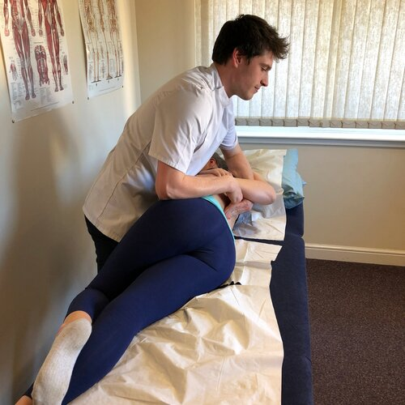
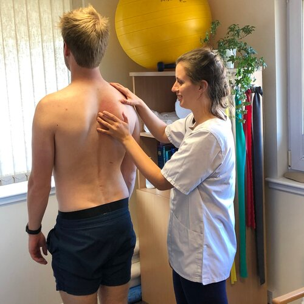

What to Expect
Your initial consultation will last for one hour and any further follow-up appointments will be 30 minutes. During your first appointment your osteopath will start by taking a detailed case history which includes your current symptoms as well as your medical history. Your osteopath will then examine you by assessing how your body is able to move both actively - which may involve you moving around, and passively - where your osteopath moves your joints around for you to assess their range of movement. Sometimes, depending on your symptoms, additional tests may need to be preformed such as taking your blood pressure or reflexes. Once your osteopath has finished their examination they will discuss with you what they think the problem is, as well as what your options are for managing it and how long they expect it will take to recover. Occasionally it may be necessary to refer you to another healthcare professionals if further investigation is required, or if osteopathic treatment is not appropriate.
Sometimes your osteopath may ask you to remove some items of clothing, this is in order to make it easier for them to examine and treat the area more accurately and effectively. We therefore advise you to bring underwear you are comfortable in or otherwise shorts that you can change into. If you are uncomfortable undressing you are able to remain fully clothed however we recommend wearing items of clothing that allow us to access the symptomatic area; for example wearing shorts or a vest when we are treating the knee or shoulder.
During treatment, Osteopaths use a wide variety of hands-on techniques to mobilise, stretch and massage the different parts of the body to create changes. Sometimes osteopaths also use manipulations, a faster technique that often results in a small popping noise in your joints - your osteopath will always discuss with you beforehand which techniques they plan to use and will never anything you are uncomfortable with. When appropriate, osteopaths will also give advice regarding exercises and lifestyle changes that can help with recovery and prevention of further injury. It is possible that you may feel some soreness after having treatment however this usually only lasts between 24-48 hours.
Sometimes your osteopath may ask you to remove some items of clothing, this is in order to make it easier for them to examine and treat the area more accurately and effectively. We therefore advise you to bring underwear you are comfortable in or otherwise shorts that you can change into. If you are uncomfortable undressing you are able to remain fully clothed however we recommend wearing items of clothing that allow us to access the symptomatic area; for example wearing shorts or a vest when we are treating the knee or shoulder.
During treatment, Osteopaths use a wide variety of hands-on techniques to mobilise, stretch and massage the different parts of the body to create changes. Sometimes osteopaths also use manipulations, a faster technique that often results in a small popping noise in your joints - your osteopath will always discuss with you beforehand which techniques they plan to use and will never anything you are uncomfortable with. When appropriate, osteopaths will also give advice regarding exercises and lifestyle changes that can help with recovery and prevention of further injury. It is possible that you may feel some soreness after having treatment however this usually only lasts between 24-48 hours.

